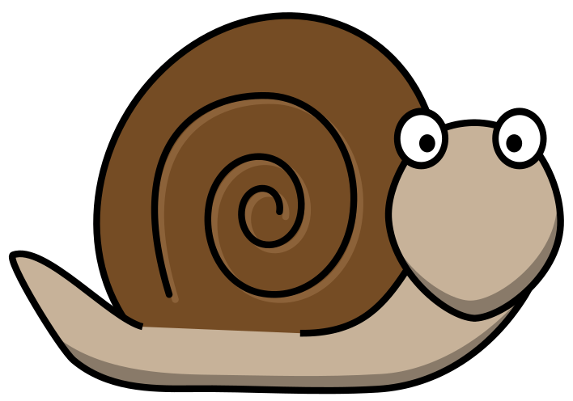

向下滚动
萨米
蜗牛
在一个阳光明媚的日子里，花园里的蜗牛萨米醒来，感到很好奇。
当他慢慢地走出平常的路径时，他闪亮的壳闪闪发光。 萨米想看看熟悉的树叶和花朵后面有什么东西。
随着他滑行，小小的花园世界似乎在他面前展开。
萨米发现了一片沾满露水的草地，在早晨的阳光下像钻石一样闪闪发光。 当他探索微小的隧道和秘密藏身处时，他充满了兴奋。
小蜗牛的冒险让他脸上露出了笑容。 萨米意识到，即使在花园最小的角落里，也隐藏着秘密。
萨米继续他的探索，渴望在这个繁花似锦的世界中发现更多奇迹。
